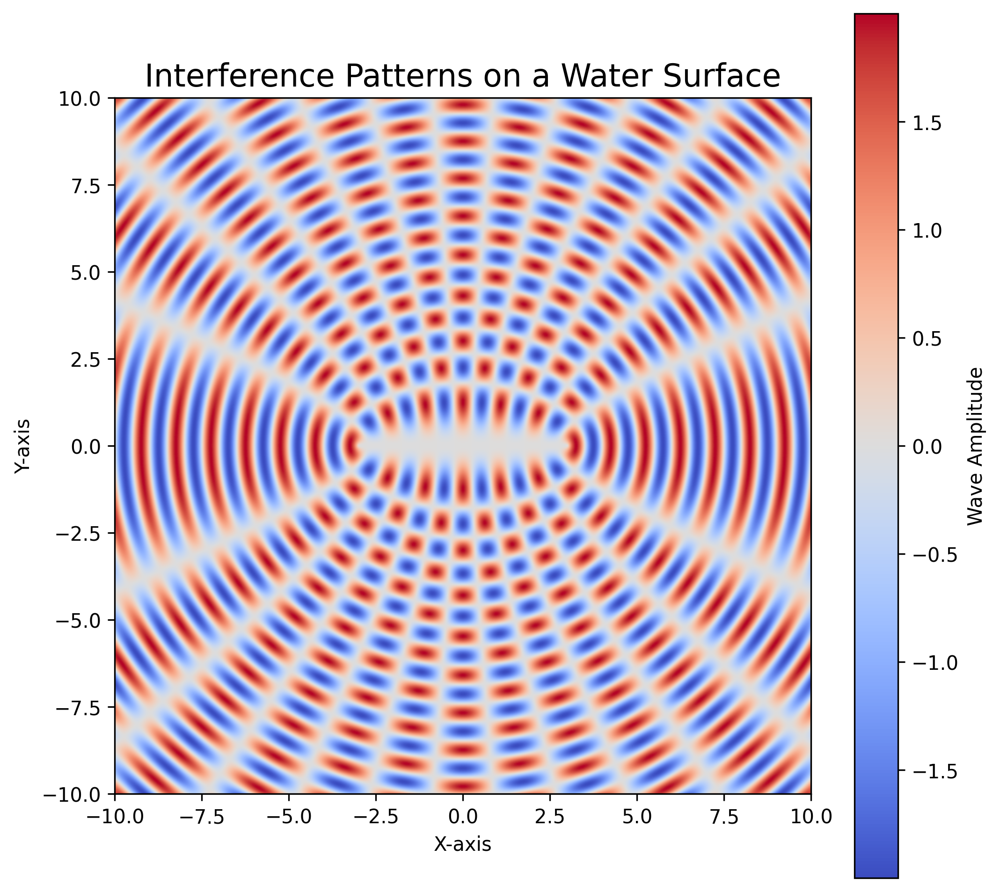
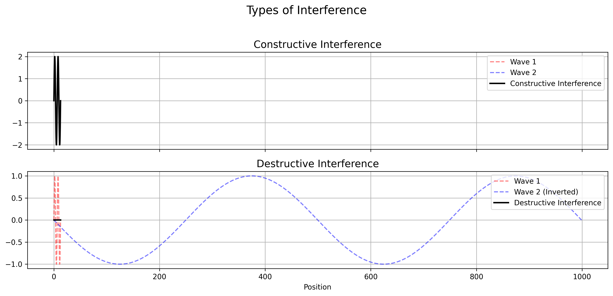
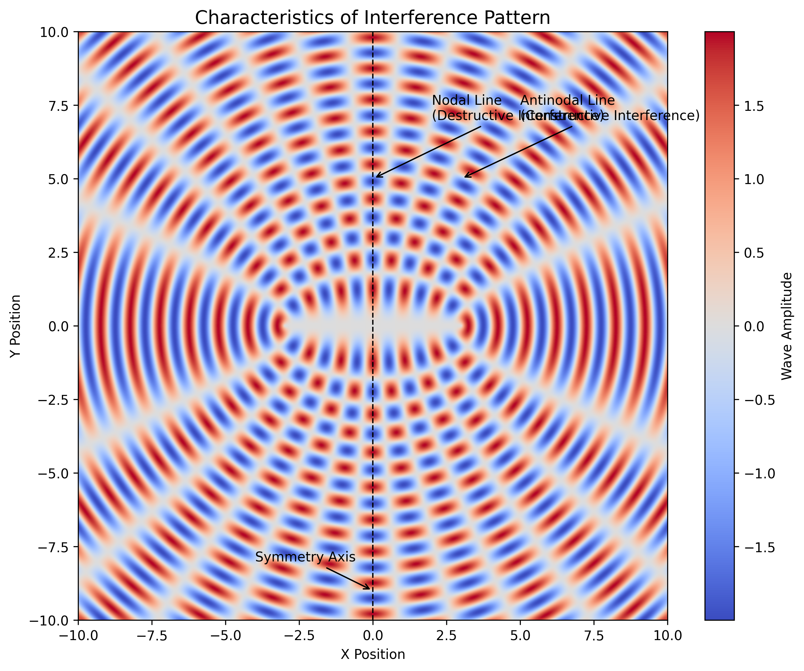
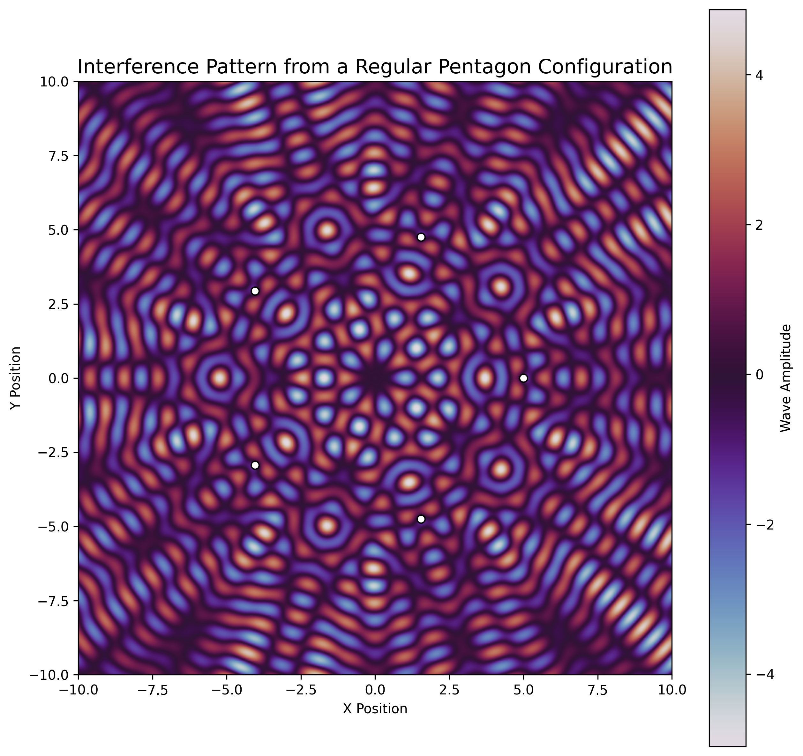

Interference Patterns on a Water Surface
Interference patterns on a water surface occur when two or more sets of waves interact with each other. These patterns are a direct result of the principle of superposition, which states that when two or more waves meet at a point, the resulting wave displacement is the sum of the individual displacements.

Types of Interference
- Constructive Interference: When the crests (or troughs) of two waves coincide, they reinforce each other, creating a wave of greater amplitude.
- Destructive Interference: When the crest of one wave coincides with the trough of another, they cancel each other out, reducing the wave amplitude or eliminating it entirely.

Observing the Pattern
Interference patterns are typically observed in a ripple tank or in natural settings where multiple wave sources are present, such as:
- Droplets falling into a calm water surface.
- Two pebbles dropped close together.
- Waves reflecting off obstacles.
The resulting pattern consists of a series of alternating bright (high-amplitude) and dark (low-amplitude or calm) regions, forming a distinctive pattern of lines or curves.
Characteristics
- Nodal Lines: Areas of destructive interference where little or no motion is visible.
- Antinodal Lines: Areas of constructive interference where wave motion is most visible.
- Symmetry: The pattern is often symmetric around the line joining the sources.

Real-World Applications
Understanding interference on water surfaces helps illustrate broader wave phenomena such as:
- Light and sound interference
- Seismic wave behavior
- Radio signal propagation
Interference patterns offer a fascinating glimpse into the wave nature of energy and matter, reinforcing fundamental concepts of physics and wave mechanics.
🌊 Wave Interference from a Regular Polygon Configuration
This simulation demonstrates the interference pattern created when point wave sources are placed at the vertices of a regular polygon. We'll use a regular pentagon for this example.
1. Select a Regular Polygon
We choose a regular pentagon with 5 vertices equally spaced around a circle. This polygon is centered at the origin (0, 0), and each vertex lies at a fixed distance (radius) from the center.
2. Position the Sources
We place point wave sources at the pentagon’s vertices. The positions \((x_i, y_i)\) of the sources are calculated using polar coordinates:
Where:
- \( n = 5 \) (number of vertices)
- \( r = 5 \) (radius from the center)
3. Define the Wave Equations
Each source emits circular waves described by the equation:
Where:
- \( \psi_i \) is the wave from source \( i \)
- \( r_i = \sqrt{(x - x_i)^2 + (y - y_i)^2} \)
- \( k = \frac{2\pi}{\lambda} \) is the wave number
- \( \lambda \) is the wavelength
4. Superposition of Waves
The total wave displacement at a point \((x, y)\) on the surface is the sum of displacements from all the sources:
This represents the interference pattern, showing areas of constructive and destructive interference.
🧠 Result & Visualization
The resulting interference pattern exhibits:
- Symmetry consistent with the polygon (pentagonal pattern)
- Nodal lines where waves cancel (destructive interference)
- Antinodal lines where waves amplify (constructive interference)
The pattern is a beautiful demonstration of wave superposition in 2D space.

📌 Applications
- Wave physics and optics
- Seismic wave modeling
- Acoustics and sound design
- Art and pattern generation